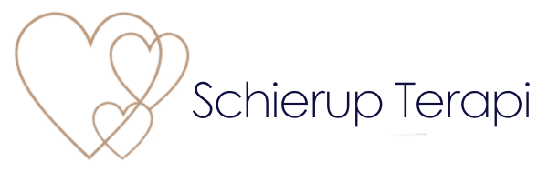
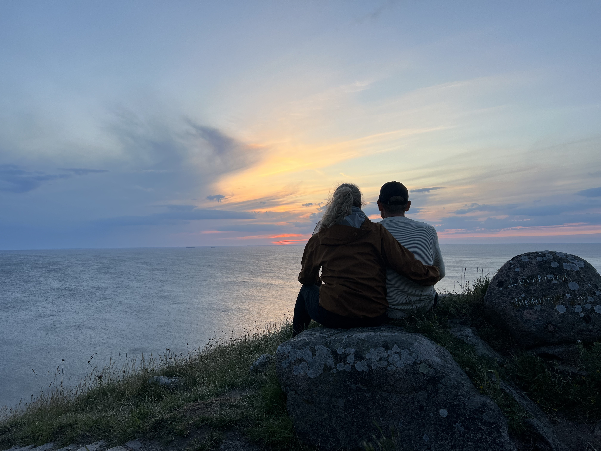
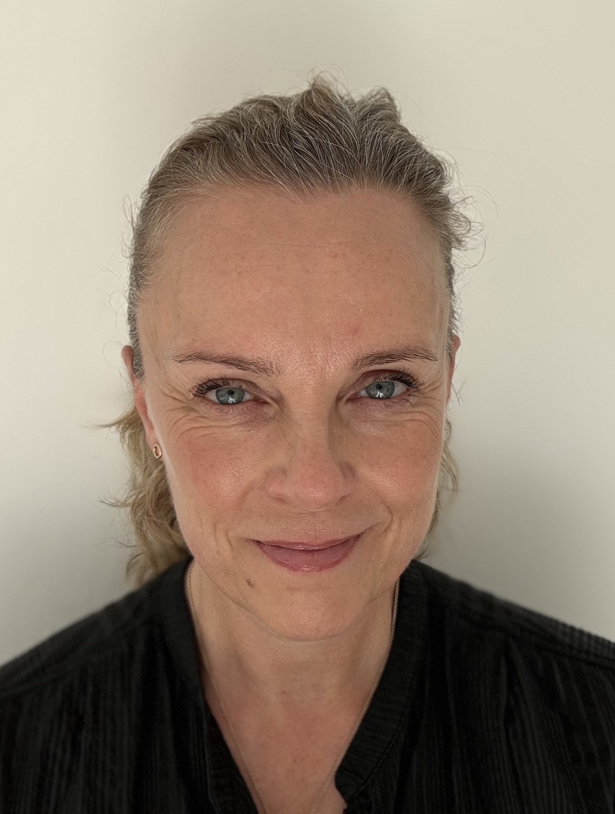

Parterapi
Når par støder på vanskeligheder, kan parterapi være vejen til udvikling. I parterapien undersøger vi hvad der sker mellem jer, og finder nye måder at møde hinanden på.
Læs mere om parterapi → Book gratis opstartssamtale

Par- og familieterapii Aarhus
Når par støder på vanskeligheder, kan parterapi være vejen til udvikling. I parterapien undersøger vi hvad der sker mellem jer, og finder nye måder at møde hinanden på.
Læs mere om parterapi → Book gratis opstartssamtaleNår relationer i familien er udfordrede eller familien er under pres, kan familieterapi åbne op for nye muligheder.
Læs mere om familieterapi → Book gratis opstartssamtale
Jeg hedder Ulla Schierup Nielsen, er speciallæge i børne- og ungdomspsykiatri, og igang med 4. og sidste år på terapeutisk videreuddannelse ved Dansk Familieterapeutisk Institut. Jeg har arbejdet i børne- og ungdomspsykiatrien siden 2011 og har gennem 15 års arbejde med behandling af psykiske lidelser opnået stor erfaring med at tale med par og familier i udfordrende livssituationer. Jeg er optaget af menneskers forsvar og mønstre, og vores tilknytning i relationer. Vi såres i relationer, og heles i relationer, og derfor er par- og familieterapi særlig effektivt, da vi arbejder relationelt.
Mit arbejde som terapeut og som psykiater har gennem årene bekræftet mig i at enhver god udvikling starter med et tillidsfuldt og trygt rum, hvor man tør lægge paraderne og være nysgerrige – sammen. Jeg arbejder oplevelsesorienteret, hvilket betyder at jeg støtter jer til at gøre nye erfaringer med jer selv og med hinanden i sessionerne. Vi undersøger det der sker lige her og nu, sammen. Hvordan påvirker vi hinanden? Hvad længes vi efter? Er der kontakt? Det er ofte ikke nok at forstå sin opvækst og sine mønstre – de fleste har også brug for at få konkrete gode erfaringer med at gøre noget andet end de plejer, gå nye veje. I oplevelsesorienteret terapi styrkes i til at gøre nye, helende erfaringer. Jeg tilbyder fagligt velfunderet terapeutisk behandling i rolige og fortrolige rammer, hvor klienter oplever at blive mødt med professionalisme, nærhed og menneskelig forståelse.
Parterapi, 90 minutter: 1.200 kr. pr. session, 5 sessioner for 5.000 kr
Familieterapi, 90 minutter: 1.200 kr. pr. session, 5 sessioner for 5.000 kr
Alle sessioner foregår i Dansk Familiterapeutisk Instituts terapilokaler på Yrsavej 34, 8230 Åbyhøj.
Når vi indgår i en tæt relation, påvirker vi hinanden. Der vil opstå misforståelser og konflikter som skal håndteres, og vores tillærte mønstre vil uundgåeligt brydes med hinanden. Vi udfordres i at være os selv, sammen. Vi konfronteres med vores mindre pæne sider, og nogle gange kan det være slidsomt. Sådan er parforhold for alle, og mange par finder efterhånden en god vej til at løse konflikter når de opstår.
Nogle gange bliver dynamikkerne så fastlåste at det er svært at se vejen videre – eller der opstår pludselig pres fra omgivelserne som vælter læsset. Parterapi kan løsne det fastlåste og åbne nye muligheder for udvikling.
Sammen undersøger vi hvordan I påvirker hinanden, hvilke behov der ligger bag reaktionerne, og tager udgangspunkt i det der foregår imellem jer, når nye veje skal findes. Da parterapi arbejder i det relationelle felt, er det en langt mere effektiv udviklingsmulighed end individuel terapi. Vi såres i relationer og heles i relationer.
I vores familierelationer påvirkes vi livslangt. Uløste konflikter kan skabe afstand, spændinger og dårlig stemning i hjemmet eller i familien. Det mærker alle, både voksne og børn.
Familiens mønstre kan sætte spor i barndommen som rækker langt ind i voksenalderen, og man kan som voksen have brug for at få talt ud med sine voksne søskende eller ældre forældre. Der kan også pludselig opstå ydre pres på familien som udløser behov for at styrke relationerne.
Familieterapi handler om at tale om det der fylder i et trygt rum hvor alle bliver hørt. I terapien er vi sammen om at finde ud af hvordan I påvirker hinanden, hvilke behov og længsler der ligger bag reaktionerne, og tager udgangspunkt i det der foregår mellem jer i sessionerne, når nye veje skal findes. Når relationerne styrkes, skabes der mere ro, tryghed og plads til at være sig selv.
Børn kan deltage i terapien. De mærker stemninger i hjemmet og har brug for at føle sig betydningsfulde, at blive set, og at opleve at de voksne tager ansvar for at løse det der er svært. Børn kan derfor være en vigtig del af terapien, og vi finder sammen ud af hvordan og hvornår de deltager.
Da familieterapi arbejder i det relationelle felt, er det en langt mere effektiv udviklingsmulighed end individuel terapi. Vi såres i relationer og heles i relationer.
Jeg er uddannet på Dansk Familieterapeutisk Institut, som har stort fokus på oplevelsesorienteret terapi. Det betyder at jeg støtter jer til at gøre nye erfaringer med jer selv og hinanden i sessionerne. Vi undersøger hvad der sker lige her og nu, sammen. Hvordan påvirker vi hinanden? Hvordan lander vores ord? Hvilke behov og længsler ligger bag de reaktioner der kommer? Er der kontakt?
Det er ofte ikke nok at forstå sin opvækst og sine mønstre rent intellektuelt, selvom det absolut også har stor værdi. De fleste har også brug for at få konkrete erfaringer med at gøre noget andet end de plejer. Bryde dynamikken.
Når vi støttes til at tage de første spæde skridt til at bryde med vores gamle mønstre, og oplever her og nu at vores nye adfærd bliver mødt positivt i vores nære relationer, så skifter vi fra ren intellektuel forståelse til en dyb følelsesmæssig erfaring, som forplanter sig ud i nervesystem og krop. Deri ligger den sande, store forandring. Dette er kernen i oplevelsesorienteret terapi.
Du er velkommen til at skrive til mig eller booke en tid. Jeg vender tilbage hurtigst muligt.
kontakt@schierupterapi.dk